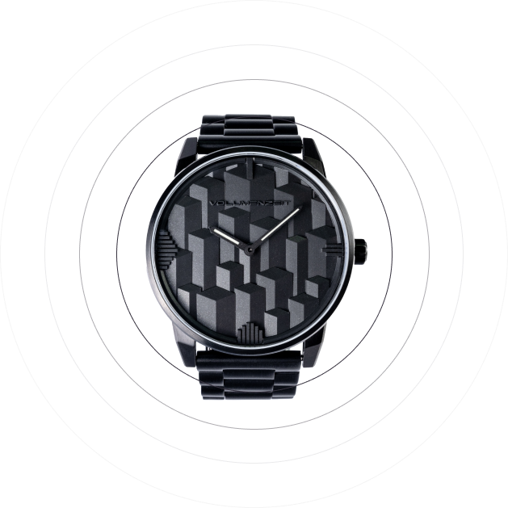

<section class="features">
    <div class="container">
        <div class="features__inner">
            <h2 class="features__title">Features</h2>
            
            <picture>
                <source srcset="../assets/images/features_mobile.webp" type="image/webp">
                
            </picture>

            <div class="features__items">
                <div class="features__item features__item--one">
                    

                    <h4 class="features__name">Individual Style</h4>
    
                    <ul class="features__list">
                        <li class="features__point">48 style combinations</li>
                        <li class="features__point">Color shifting Dial Colors</li>
                        <li class="features__point">15 Strap options</li>
                        <li class="features__point">Custom Strap Engraving</li>
                    </ul>
                </div>
    
                <div class="features__item features__item--two">
                    

                    <h4 class="features__name">High Quality Components</h4>
    
                    <ul class="features__list">
                        <li class="features__point">Case: 316L Stainless-steel</li>
                        <li class="features__point">Coating: Color anodized anti-scratch</li>
                        <li class="features__point">Glass: Sapphire Crystal</li>
                        <li class="features__point">Straps: 22mm Stainless-steel bracelet, Milanese Mesh bracelet, Leather</li>
                    </ul>
                </div>
    
                <div class="features__item features__item--three">
                    
                    
                    <h4 class="features__name">Features</h4>
    
                    <ul class="features__list">
                        <li class="features__point">Case Size: 42mm</li>
                        <li class="features__point">Case Color: Silver, Black, Blue, chamfered brush with mirror polish</li>
                        <li class="features__point">Dial Color: Black Metallic, Color shifting Blue-Purple, Green-Purple, Pink-Gold</li>
                        <li class="features__point">Water Resistance: 5 ATM/50 meters</li>
                        <li class="features__point">Straps: Quick release</li>
                        <li class="features__point">Movement: Swiss Parts RONDA 762E Instantaneous rate -10/ +20 sec/month Standard Battery life: 10 years</li>
                    </ul>
                </div>
            </div>
        </div>
    </div>
</section>